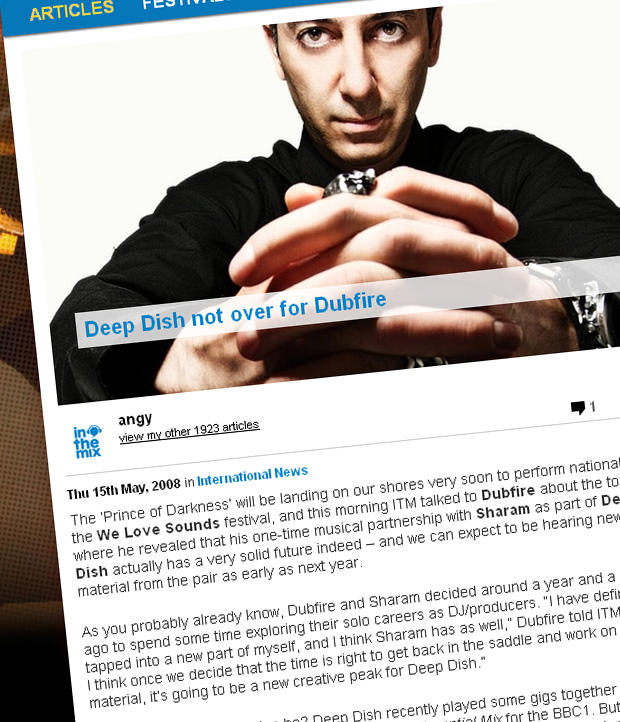

Deep Dish not over for Dubfire
{kind=link}

The ‘Prince of Darkness’ will be landing on our shores very soon to perform nationally at the We Love Sounds festival, and this morning ITM talked to Dubfire about the tour, where he revealed that his one-time musical partnership with Sharam as part of Deep Dish actually has a very solid future indeed – and we can expect to be hearing new material from the pair as early as next year.
As you probably already know, Dubfire and Sharam decided around a year and a half ago to spend some time exploring their solo careers as DJ/producers. “I have definitely tapped into a new part of myself, and I think Sharam has as well,” Dubfire told ITM. “And I think once we decide that the time is right to get back in the saddle and work on new material, it’s going to be a new creative peak for Deep Dish.”
And when might this reunion be? Deep Dish recently played some gigs together at the Miami Winter Conference and even recorded an Essential Mix for the BBC1. But according to Dubfire, it’ll be 2009 at the earliest before either of them will be done with the solo work that they’ve both got on the boil. “I know that Sharam has got a lot of plans this year – he’s got a new artist album that he’s gonna be releasing and a number of singles, and I’ll be doing my thing. So probably some time next year… We definitely want to work together again, it’s just a question of finding the right time.”
Talking about how the Deep Dish split was perceived when news of it first leaked out to the world, Dubfire confirms that there was never any bad blood between him or Sharam. “A lot of people wanted the split to be acrimonious, and they wanted us to go at it in the press. And we’ve definitely divided fans with the different types of music that we’ve both embraced.” Of course, he’s making reference to the fact that while Sharam pursued more of a melodic and upfront musical path, Dubfire instead embraced underground house in some of its darker and deeper shades – and to massive success, with his Roadkill and Ribcage singles proving to be two of the biggest club anthems of last year, in a solid winning streak that also saw him releasing material on Richie Hawtin and Loco Dice’s record labels among others.
“We all have our own creative vision, and I think toward the end of the last album for Deep Dish we started to clash a little bit… When you’re in a group situation it’s all about the shared vision, and you have to make a lot of compromises. I think we got to a point after 15 years of being literally joined at the hip, we grew tired of wanting to compromise. So it becomes a natural thing to go your separate ways, and prove yourself on a solo front. For us it’s a very healthy competition that we’ve got going.”
Stay tuned to ITM for the full Dubfire interview in the coming weeks as we lead up to We love Sounds!